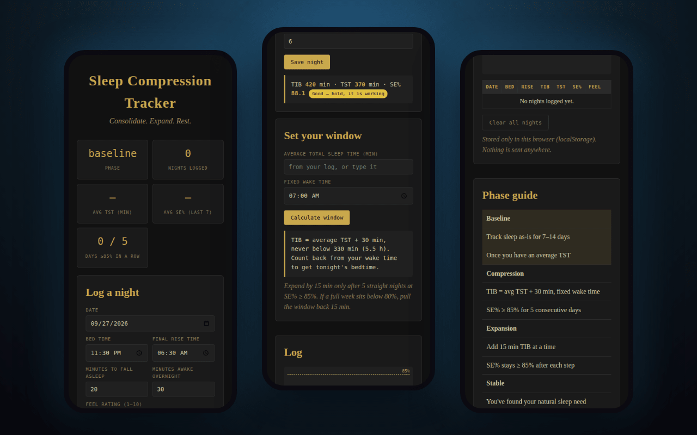

Nightly log
Bed time, time to fall asleep, time awake, rise time; time in bed, total sleep and efficiency computed as you type.
Consolidate. Expand. Rest. A sleep-restriction protocol built as an Obsidian vault — and a tracker that does the arithmetic every morning.
Log nights · SE% · window calculator · stored only in your browser

"Sleep pressure is the mechanism. The window is the tool. Consistency is the cure." Track sleep as it is for one to two weeks, then shrink time in bed to the sleep you actually get plus thirty minutes — never below five and a half hours — with a wake time that does not move. Once efficiency holds at 85% for five nights running, give fifteen minutes back. Repeat until rested.
Bed time, time to fall asleep, time awake, rise time; time in bed, total sleep and efficiency computed as you type.
Excellent at 90%+, good at 85–89, marginal at 80–84, poor below 80, each with the protocol's own instruction.
Baseline, compression or expansion, and a live count toward the five-night streak.
Average sleep plus thirty, held at the 5.5-hour floor, counted back from your fixed wake time to tonight's bedtime.
The original Obsidian templates, guide, phase-coloured graph and theme, as a download.
Obsidian first: daily and weekly templates, graph colour groups keyed to phase tags, and a CSS snippet in the Mentifaber palette. The web tracker is vanilla JS with everything in localStorage — no account, and nothing leaves the browser.
A tracker for a known behavioural protocol, not medical advice. The protocol's own red-flag table says it plainly: if efficiency plateaus below 85% for weeks, something else may be going on — anxiety, sleep apnea — and it's worth a professional evaluation.
keep scrolling · it opens right here